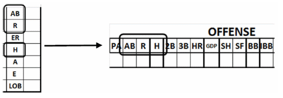
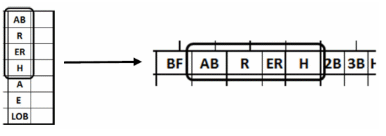
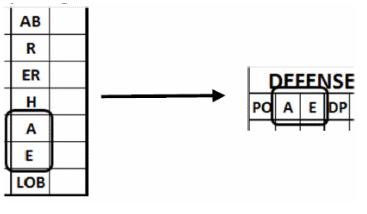
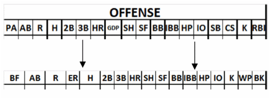
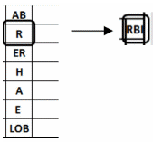
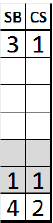
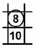

| Check that the finish time and duration of the game have been entered. |
|
| Check that the total runs have been recorded in the reserved for runs scored, inning by inning. |
Check that the totals recorded in the lower part of the final inning correspond with the offense totals of the same team, and the pitchers and fielders of the opposing team. In particular:
-
Times At Bat (AB), runs scored (R) and hits (H) must correspond to the offensive totals of the same team;

-
Times At Bat (AB), runs scored (R), earned runs (ER) and hits (H) must tally with the pitching totals of the opposing team.

-
Assists (A) and errors (E) must tally with the defense totals of the opposing team.

Check that the offense data totals that correspond to the pitching data of the opposing team are the same.

Check the data that do not have any counterpart on the other sheet:
-
Grounded into Double Play (GDP): check that double plays are entered in the defense statistics of the opposing team, and that the player really did hit into a double play. The number of GDPs must always be equal to or less than the number of Double Plays credited to the opposing team. If it is more it means that there is a play like e.g. GDP 6E3. 
-

Runs Batted In (RBI): check that this figure is no greater than the total runs scored by the team. If the total is less, check that the difference was not actually batted in. The number of Runs Batted In must always be less than or equal to the number of Runs scored by the same team.. -
Wild pitches (WP) and balks (BK) by the pitchers, and passed balls (PB) by the catchers must be checked visually against the central section of the opposing team’s score-sheet.
| Check that the offense data totals that have a counterpart in the catching record of the opposing team are identical. |
|
| Check whether there are any Stolen Bases (SB) or Caught Stealing (CS) not credited to the catcher. If so, write the number not for the catcher in the colored lines for the pitchers. By doing this the total number of Stolen Bases / Caught Stealing credited to the catchers/pitchers must always be equal to the Stolen Bases / Caught Stealing on the opposing team. For Stolen Bases, make a remark in the notes. |
 |
Check whether there were any runs earned against the pitcher(s) but not against the team. If so, write the team total in a circle above the total runs earned against the pitcher(s).
| For example, if runs earned against the pitcher(s) total 10, and two of these were not earned against the team, write “8” above the pitcher(s)’s total. The number of runs earned against the team must always be equal to or less than the runs earned against the pitcher(s) of the same team. |
 |
Check that the total number of putouts (PO) recorded in the defense statistics matches the number of innings played, multiplied by three. Each fraction of an inning is equivalent to an out; accordingly, if the number of innings played was 8.2, putouts must be 26 (8 x 3 + 2).
In games where there are many changes and substitutions, it is a good idea in every case to check the allocation of innings played for each defensive role, and for each position in the lineup.